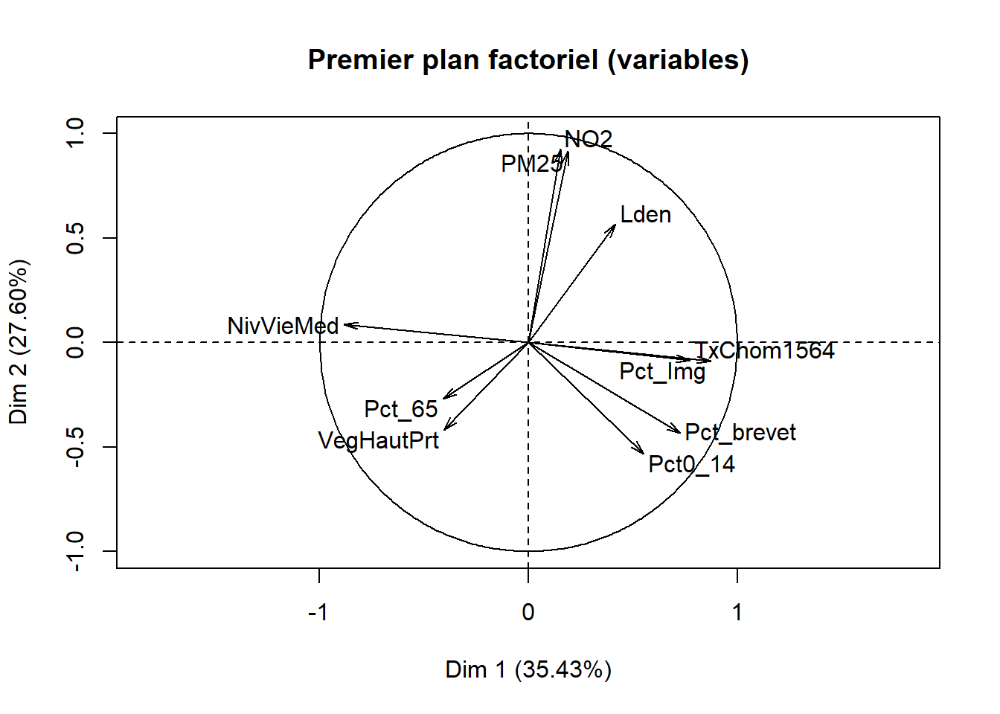

12.2 Analyses en composantes principales (ACP)
D’emblée, notez qu’il existe deux types d’analyse en composantes principales (ACP) (Principal Component Analysis, PCA en anglais) :
- l’ACP non normée dans laquelle les variables quantitatives du tableau sont uniquement centrées (moyenne = 0).
- l’ACP normée dans laquelle les variables quantitatives du tableau sont préalablement centrées réduites (moyenne = 0 et variance = 1; section 2.5.5.2).
Puisque les variables d’un tableau sont souvent exprimées dans des unités de mesure différentes ou avec des ordres de grandeur différents (intervalles et écarts-types bien différents), l’utilisation de l’ACP normée est bien plus courante. Elle est d’ailleurs l’option par défaut dans les fonctions R permettant de calculer une ACP. Par conséquent, nous détaillons dans cette section uniquement l’ACP normée.
Autrement dit, le recours à une ACP non normée est plus rare et s’applique uniquement à la situation suivante : toutes les variables du tableau sont mesurées dans la même unité (par exemple, en pourcentage); il pourrait être ainsi judicieux de conserver leurs variances respectives.
12.2.1 Recherche d’une simplification
L’ACP permet d’explorer et de résumer un tableau constitué uniquement de variables quantitatives (figure 12.2), et ce, de trois façons : 1) en montrant les ressemblances entre les individus (observations), 2) en révélant les liaisons entre les variables quantitatives et 3) en résumant l’ensemble des variables du tableau par des variables synthétiques nommées composantes principales.
Figure 12.2: Tableau pour une ACP
Ressemblance entre les individus. Concrètement, deux individus se ressemblent si leurs valeurs respectives pour les p variables du tableau sont similaires. Cette proximité/ressemblance est évaluée à partir de la distance euclidienne (équation (12.1)). La notion de distance fait l’objet d’une section à part entière (section 13.2) que vous pouvez consulter dès à présent si elle ne vous est pas familière.
\[\begin{equation} d^2(a,b) = \sum_{j=1}^p(x_{aj}-x_{bj})^2 \tag{12.1} \end{equation}\]
Prenons un exemple fictif avec trois individus (i, j et k) ayant des valeurs pour trois variables préalablement centrées réduites (V1 à V3) (tableau 12.2). La proximité entre les paires de points est évaluée comme suit :
\[d^2(i,j)=(-\mbox{1,15}-\mbox{0,49})^2+(-\mbox{1,15}-\mbox{0,58})^2+(\mbox{0,83}+\mbox{1,11})^2=\mbox{9,44}\] \[d^2(i,k)=(-\mbox{1,15}+\mbox{0,66})^2+(-\mbox{1,15}-\mbox{0,58})^2+(\mbox{0,83}-\mbox{0,28})^2=\mbox{5,98}\]
\[d^2(j,k)= (\mbox{0,49}+\mbox{0,66})^2+(\mbox{0,58}-\mbox{0,58})^2+(-\mbox{1,11}-\mbox{0,28})^2=\mbox{1,97}\]
Nous pouvons en conclure que i est plus proche de k que de j, mais aussi que la paire de points les plus proches est (i,k). En d’autres termes, les deux observations i et k sont les plus similaires du jeu de données selon la distance euclidienne.
| Individu | V1 | V2 | V3 |
|---|---|---|---|
| i | -1,15 | -1,15 | 0,83 |
| j | 0,49 | 0,58 | -1,11 |
| k | 0,66 | 0,58 | 0,28 |
Liaisons entre les variables. Dans une ACP normée, les liaisons entre les variables deux à deux sont évaluées avec le coefficient de corrélation (section 4.3.1), soit la moyenne du produit des deux variables centrées réduites (équation (12.2)). Notez que dans une ACP non normée, plus rarement utilisée, les liaisons sont évaluées avec la covariance puisque les variables sont uniquement centrées (équation (12.3)).
\[\begin{equation} r_{xy} = \frac{\sum_{i=1}^n (x_{i}-\bar{x})(y_{i}-\bar{y})}{n\sqrt{\sum_{i=1}^n(x_i - \bar{x})^2(y_i - \bar{y})^2}}=\sum_{i=1}^n\frac{Zx_iZy_i}{n} \tag{12.2} \end{equation}\]
\[\begin{equation} cov(x,y) = \frac{\sum_{i=1}^n (x_{i}-\bar{x})(y_{i}-\bar{y})}{n} \tag{12.3} \end{equation}\]
Composantes principales. Au chapitre 4, nous avons abordé deux méthodes pour identifier des relations linéaires entre des variables continues normalement distribuées :
- la corrélation de Pearson (section 4.3), qu’il est possible d’illustrer graphiquement à partir d’un nuage de points;
- la régression linéaire simple (section 4.4), permettant de résumer la relation linéaire entre deux variables avec une droite de régression de type \(Y=a+bX\).
Brièvement, plus deux variables sont corrélées (positivement ou négativement), plus le nuage de points qu’elles forment est allongé et plus les points sont proches de la droite de régression (figure 12.3, partie a). À l’inverse, plus la liaison entre les deux variables normalement distribuées est faible, plus le nuage prend la forme d’un cercle et plus les points du nuage sont éloignés de la droite de régression (figure 12.3, partie b). Puisqu’en ACP normée, les variables sont centrées réduites, le centre de gravité du nuage de points est (x=0, y=0) et il est toujours traversé par la droite de régression. Finalement, nous avons vu que la méthode des moindres carrés ordinaires (MCO) permet de déterminer cette droite en minimisant les distances entre les valeurs observées et celles projetées orthogonalement sur cette droite (valeurs prédites). Dans le cas de deux variables uniquement, l’axe factoriel principal/la composante principale est donc la droite qui résume le mieux la liaison entre les deux variables (en rouge). L’axe 2 représente la seconde plus importante composante (axe, dimension) et il est orthogonal (perpendiculaire) au premier axe (en bleu).
Figure 12.3: Corrélation, allongement du nuage de points et axes factoriels
Imaginez maintenant trois variables pour lesquelles vous désirez identifier un axe, une droite qui résume le mieux les liaisons entre elles. Visuellement, vous passez d’un nuage de points en deux dimensions (2D) à un nuage en dimensions (3D). Si les corrélations entre les trois variables sont très faibles, alors le nuage prend la forme d’un ballon de soccer (football en Europe). Par contre, plus ces liaisons sont fortes, plus la forme est allongée comme un ballon de rugby et plus les points sont proches de l’axe traversant le ballon.
Ajouter une autre variable revient alors à ajouter une quatrième dimension qu’il est impossible de visualiser, même pour les plus fervents adaptes de science-fiction. Pourtant, le problème reste le même : identifier, dans un plan en p dimensions (variables), les axes factoriels – les composantes principales – qui concourent le plus à résumer les liaisons entre les variables continues préalablement centrées réduites, et ce, en utilisation la méthode des moindres carrés ordinaires.
Les termes composantes principales et axes factoriels sont des synonymes employés pour référer aux nouvelles variables synthétiques produites par l’ACP et résumant l’information du tableau intitial.
12.2.2 Aides à l’interprétation
Pour illustrer les aides à l’interprétation de l’ACP, nous utilisons un jeu de données spatiales tiré d’un article sur l’agglomération lyonnaise en France (Gelb et Apparicio 2021b). Ce jeu de données comprend dix variables, dont quatre environnementales (EN) et six socioéconomiques (SE), pour les îlots regroupés pour l’information statistique (IRIS) de l’agglomération lyonnaise (tableau 12.3 et figure 12.4). Sur ces dix variables, nous calculons une ACP normée.
| Nom | Intitulé | Type | Moy. | E.-T. | Min. | Max. |
|---|---|---|---|---|---|---|
| Lden | Bruit routier (Lden dB(A)) | EN | 55,6 | 4,9 | 33,9 | 71,7 |
| NO2 | Dioxyde d’azote (ug/m3) | EN | 28,7 | 7,9 | 12,0 | 60,2 |
| PM25 | Particules fines (PM\(_{2,5}\)) | EN | 16,8 | 2,1 | 11,3 | 21,9 |
| VegHautPrt | Canopée (%) | EN | 18,7 | 10,1 | 1,7 | 53,8 |
| Pct0_14 | Moins de 15 ans (%) | SE | 18,5 | 5,7 | 0,0 | 54,0 |
| Pct_65 | 65 ans et plus (%) | SE | 16,2 | 5,9 | 0,0 | 45,1 |
| Pct_Img | Immigrants (%) | SE | 14,5 | 9,1 | 0,0 | 59,8 |
| TxChom1564 | Taux de chômage | SE | 14,8 | 8,1 | 0,0 | 98,8 |
| Pct_brevet | Personnes à faible scolarité (%) | SE | 23,5 | 12,6 | 0,0 | 100,0 |
| NivVieMed | Médiane du niveau de vie (Euros) | SE | 21 804,5 | 4 922,5 | 11 324,0 | 38 707,0 |

Figure 12.4: Cartographie des dix variables utilisées pour l’ACP
Trois étapes pour bien analyser une ACP et comprendre la signification des axes factoriels :
- Interprétation des résultats des valeurs propres pour identifier le nombre d’axes (de composantes principales) à retenir. L’enjeu est de garder un nombre d’axes limité qui résume le mieux le tableau initial (réduction des données).
- Analyse des résultats pour les variables (coordonnées factorielles, cosinus carrés et contributions sur les axes retenus).
- Analyse des résultats pour les individus (coordonnées factorielles, cosinus carrés et contributions sur les axes retenus).
Les deux dernières étapes permettent de comprendre la signification des axes retenus et de les qualifier. Cette étape d’interprétation est essentielle en sciences sociales. En effet, nous avons vu dans l’introduction du chapitre que les méthodes factorielles permettent de résumer l’information d’un tableau en quelques nouvelles variables synthétiques, souvent considérées comme des variables latentes dans le jeu de données. Il convient alors de bien comprendre ces variables synthétiques (latentes), si nous souhaitons les utiliser dans une autre analyse subséquente (par exemple, les introduire dans une régression).
12.2.2.1 Résultats de l’ACP pour les valeurs propres
À titre de rappel, une ACP normée est réalisée sur des variables préalablement centrées réduites (équation (12.4)), ce qui signifie que pour chaque variable :
- Nous soustrayons à chaque valeur la moyenne de la variable correspondante (centrage); la moyenne est donc égale à 0.
- Nous divisons cette différence par l’écart-type de la variable correspondante (réduction); la variance est égale à 1.
\[\begin{equation} z= \frac{x_i-\mu}{\sigma} \tag{12.4} \end{equation}\]
Par conséquent, la variance totale (ou inertie totale) d’un tableau sur lequel est calculée une ACP normée est égale au nombre de variables qu’il comprend. Puisque nous l’appliquons ici à dix variables, la variance totale du tableau à réduire – c’est-à-dire à résumer en K nouvelles variables synthétiques, composantes principales, axes factoriels – est donc égale à 10. Trois mesures reportées au tableau 12.4 permettent d’analyser les valeurs propres :
- \(\mbox{VP}_k\), la valeur propre (eigenvalue en anglais) de l’axe k, c’est-à-dire la quantité de variance du tableau initial résumé par l’axe.
- \(\mbox{VP}_k / \mbox{P}\) avec P étant le nombre de variables que comprend le tableau initial. Cette mesure représente ainsi le pourcentage de la variance totale du tableau résumé par l’axe k, autrement dit la quantité d’informations du tableau initial résumée par l’axe, la composante principale k. Cela nous permet ainsi d’évaluer le pouvoir explicatif de l’axe.
- Le pourcentage cumulé pour les axes.
| Composante | Valeur propre | Pourcentage | Pourc. cumulé |
|---|---|---|---|
| 1 | 3,543 | 35,425 | 35,425 |
| 2 | 2,760 | 27,596 | 63,021 |
| 3 | 1,042 | 10,422 | 73,443 |
| 4 | 0,751 | 7,511 | 80,954 |
| 5 | 0,606 | 6,059 | 87,013 |
| 6 | 0,388 | 3,880 | 90,893 |
| 7 | 0,379 | 3,788 | 94,681 |
| 8 | 0,244 | 2,441 | 97,122 |
| 9 | 0,217 | 2,167 | 99,289 |
| 10 | 0,071 | 0,711 | 100,000 |
Avant d’analyser en détail le tableau 12.4, notez que la somme des valeurs propres de toutes les composantes de l’ACP est toujours égale au nombre de variables du tableau initial. Aussi, la quantité de variance expliquée (les valeurs propres) décroît de la composante 1 à la composante K.
Combien d’axes d’une ACP faut-il retenir? Pour répondre à cette question, deux approches sont possibles :
- Approche statistique (avec le critère de Kaiser (1960)). Nous retenons uniquement les composantes qui présentent une valeur propre supérieure à 1. Rappelez-vous qu’en ACP normée, les variables sont préalablement centrées réduites, et donc que leur variance respective est égale à 1. Par conséquent, une composante ayant une valeur propre inférieure à 1 a un pouvoir explicatif inférieur à celui d’une variable. À la lecture du tableau, nous retenons les trois premières composantes si nous appliquons ce critère.
- Approche empirique basée sur la lecture des pourcentages et des pourcentages cumulés. Nous pouvons retenir uniquement les deux premières composantes. En effet, ces deux premiers facteurs résument près des deux tiers de la variance totale du tableau (63,02 %). Cela démontre bien que l’ACP, comme les autres méthodes factorielles, est bien une méthode de réduction de données puisque nous résumons dix variables avec deux nouvelles variables synthétiques (axes, composantes principales). Pour faciliter le choix du nombre d’axes, il est fortement conseillé de construire des histogrammes à partir des valeurs propres, des pourcentages et des pourcentages cumulés (figure 12.5). Or, à la lecture de ces graphiques, nous constatons que la variance expliquée chute drastiquement après les deux premières composantes. Par conséquent, nous pouvons retenir uniquement les deux premiers axes.
Lecture du diagramme des valeurs propres
Plus les variables incluses dans l’ACP sont corrélées entre elles, plus l’ACP est intéressante : plus les valeurs propres des premiers axes sont fortes et plus il y a des sauts importants dans le diagramme des valeurs propres. À l’inverse, lorsque les variables incluses dans l’ACP sont peu corrélées entre elles, il n’y a pas de sauts importants dans l’histogramme, autrement dit les valeurs propres sont uniformément décroissantes.

Figure 12.5: Graphiques personnalisés pour les valeurs propres pour l’ACP
12.2.2.2 Résultats de l’ACP pour les variables
Pour qualifier les axes, quatre mesures sont disponibles pour les variables :
- Les coordonnées factorielles des variables sont simplement les coefficients de corrélation de Pearson des variables sur l’axe k et varient ainsi de -1 à 1 (relire au besoin la section 4.3). Pour qualifier un axe, il convient alors de repérer les variables les plus corrélées positivement et négativement sur l’axe, autrement dit, de repérer les variables situées aux extrémités l’axe.
- Les cosinus carrés des variables (Cos2) (appelés aussi les qualités de représentation des variables sur un axe) permettent de repérer le ou les axes qui concourent le plus à donner un sens à la variable. Ils sont en fait les coordonnées des variables mises au carré. La somme des cosinus carrés d’une variable sur tous les axes de l’ACP est donc égale à 1 (sommation en ligne).
La qualité de représentation d’une variable sur les n premiers axes est simplement la somme des cosinus carrés d’une variable sur les axes retenus. Par exemple, pour la variable
Lden, la qualité de représentation de la variable sur le premier axe est égale : \(\mbox{0,42}^2=\mbox{0,17}\). Pour cette même variable, la qualité de laLdensur les trois premiers axes est égale à : \(\mbox{0,17}+\mbox{0,32}+\mbox{0,26}=\mbox{0,75}\). - Les contributions des variables permettent de repérer celles qui participent le plus à la formation d’un axe. Elles s’obtiennent en divisant les cosinus carrés par la valeur propre de l’axe multiplié par 100. La somme des contributions des variables pour un axe donné est donc égale à 100 (sommation en colonne). Par exemple, pour la variable
Lden, la contribution sur le premier axe est égale : \(\mbox{0,174} / \mbox{3,543} \times \mbox{100}= \mbox{4,920 }%\).
Les résultats de l’ACP pour les variables sont présentés au tableau 12.5.
| Variable | 1 | 2 | 3 | 1 | 2 | 3 | Qualité | 1 | 2 | 3 |
|---|---|---|---|---|---|---|---|---|---|---|
| Lden | 0,42 | 0,57 | 0,51 | 0,17 | 0,32 | 0,26 | 0,75 | 4,92 | 11,64 | 24,80 |
| NO2 | 0,15 | 0,93 | 0,19 | 0,02 | 0,86 | 0,04 | 0,92 | 0,66 | 31,07 | 3,54 |
| PM25 | 0,19 | 0,92 | 0,03 | 0,04 | 0,84 | 0,00 | 0,87 | 1,01 | 30,36 | 0,12 |
| VegHautPrt | -0,40 | -0,42 | 0,40 | 0,16 | 0,18 | 0,16 | 0,50 | 4,63 | 6,35 | 15,46 |
| Pct0_14 | 0,55 | -0,53 | 0,08 | 0,30 | 0,28 | 0,01 | 0,59 | 8,61 | 10,28 | 0,55 |
| Pct_65 | -0,41 | -0,27 | 0,72 | 0,17 | 0,07 | 0,51 | 0,75 | 4,73 | 2,66 | 49,26 |
| Pct_Img | 0,87 | -0,09 | 0,11 | 0,76 | 0,01 | 0,01 | 0,78 | 21,56 | 0,29 | 1,08 |
| TxChom1564 | 0,77 | -0,09 | -0,07 | 0,60 | 0,01 | 0,00 | 0,61 | 16,89 | 0,27 | 0,45 |
| Pct_brevet | 0,73 | -0,43 | 0,22 | 0,53 | 0,19 | 0,05 | 0,77 | 14,94 | 6,81 | 4,61 |
| NivVieMed | -0,88 | 0,09 | 0,04 | 0,78 | 0,01 | 0,00 | 0,79 | 22,06 | 0,28 | 0,14 |
Analyse de la première composante principale (valeur propre de 3,54, 35,43 %)
À la lecture des contributions, il est clair que quatre variables contribuent grandement à la formation de l’axe 1 :
NivVieMed(22,06 %),Pct_Img(21,56 %),TxChom1564(16,89 %) etPct_brevet(14,94 %). Il convient alors d’analyser en détail leurs coordonnées factorielles et leurs cosinus carrés.À la lecture des coordonnées factorielles, nous constatons que trois variables socioéconomiques sont fortement corrélées positivement avec l’axe 1, soit le pourcentage d’immigrants (0,87), le taux de chômage (0,77) et le pourcentage de personnes avec une faible scolarité (0,73). À l’autre extrémité, la médiane du niveau de vie (en Euros) est négativement corrélée avec l’axe 1. Comment interpréter ce résultat? Premièrement, cela signifie que plus la valeur de l’axe 1 est positive et élevée, plus celles des trois variables (
Pct_Img,TxChom1564etPct_brevet) sont aussi élevées (corrélations positives) et plus la valeur deNivVieMedest faible (corrélation négative). Inversement, plus la valeur de l’axe 1 est négative et faible, les valeurs dePct_Img,TxChom1564etPct_brevetsont faibles et plus celle deNivVieMedest forte. Deuxièmement, cela signifie que les trois variables (Pct_Img,TxChom1564etPct_brevet) sont fortement corrélées positivement entre elles puisqu’elles se situent sur la même extrémité de l’axe et qu’elles sont toutes trois négativement corrélées avec la variableNivVieMed. Cela peut être rapidement confirmé avec la matrice de corrélation entre les dix variables (tableau 12.6).À la lecture des cosinus carrés de l’axe 1, nous constatons que plus des trois quarts de la dispersion/de l’information des variables
NivVieMed(0,78) etPct_Img(0,76) est concentrée sur l’axe 1.
| Variable | A | B | C | D | E | F | G | H | I | J |
|---|---|---|---|---|---|---|---|---|---|---|
| A. Lden | 0,62 | 0,49 | -0,23 | 0,04 | -0,09 | 0,28 | 0,19 | 0,14 | -0,26 | |
| B. NO2 | 0,62 | 0,90 | -0,28 | -0,34 | -0,21 | 0,07 | 0,04 | -0,25 | -0,04 | |
| C. PM25 | 0,49 | 0,90 | -0,39 | -0,34 | -0,26 | 0,12 | 0,07 | -0,25 | -0,10 | |
| D. VegHautPrt | -0,23 | -0,28 | -0,39 | 0,04 | 0,32 | -0,22 | -0,18 | -0,14 | 0,32 | |
| E. Pct0_14 | 0,04 | -0,34 | -0,34 | 0,04 | -0,12 | 0,46 | 0,36 | 0,54 | -0,45 | |
| F. Pct_65 | -0,09 | -0,21 | -0,26 | 0,32 | -0,12 | -0,24 | -0,30 | 0,00 | 0,32 | |
| G. Pct_Img | 0,28 | 0,07 | 0,12 | -0,22 | 0,46 | -0,24 | 0,66 | 0,64 | -0,73 | |
| H. TxChom1564 | 0,19 | 0,04 | 0,07 | -0,18 | 0,36 | -0,30 | 0,66 | 0,47 | -0,62 | |
| I. Pct_brevet | 0,14 | -0,25 | -0,25 | -0,14 | 0,54 | 0,00 | 0,64 | 0,47 | -0,67 | |
| J. NivVieMed | -0,26 | -0,04 | -0,10 | 0,32 | -0,45 | 0,32 | -0,73 | -0,62 | -0,67 |
Analyse de la deuxième composante principale (valeur propre de 2,76, 27,60 %)
- À la lecture des contributions, trois variables environnementales contribuent à la formation de l’axe 2 : principalement, celles sur la pollution de l’air (
NO2= 31,07 % etPM25= 30,36 %) et secondairement, celle sur le bruit routier (Lden= 11,64 %). - À la lecture des coordonnées factorielles, ces trois variables sont fortement corrélées positivement avec l’axe 2 :
NO2(0,93),PM25(0,92) etLden(0,57). À l’autre extrémité de l’axe, la variablePct0_14est négativement, mais pas fortement, corrélée (-0,53). La lecture de la matrice de corrélation au tableau 12.6 confirme que ces trois variables environnementales sont fortement corrélées positivement entre elles (par exemple, un coefficient de corrélation de Pearson de 0,90 entreNO2etPM25). - À la lecture des cosinus carrés de l’axe 2, nous constatons que près de 90 % de la dispersion/de l’information des variables
NO2(0,86) etPM25(0,84) est concentrée sur l’axe 2.
Analyse de la troisième composante principale (valeur propre de 1,042, 10,42 %)
- Le pourcentage de personnes âgées (
Pct_65) contribue principalement à la formation de l’axe 3 avec lequel il est corrélé positivement (contribution de 49,26 % et coordonnée factorielle de 0,72). S’en suit la variableLden, qui joue un rôle beaucoup moins important (contribution de 24,80 % et coordonnée factorielle de 0,51).
Lien entre la valeur propre d’un axe et le nombre de variables contribuant à sa formation
Vous auvez compris que plus la valeur propre d’un axe est forte, plus il y a potentiellement de variables qui concourent à sa formation. Cela explique que pour la troisième composante, qui a une faible valeur propre (1,042), seule une variable contribue significativement à sa formation.
Analyse de la qualité de représentation des variables sur les premiers axes de l’ACP
À titre de rappel, la qualité est simplement la somme des cosinus carrés d’une variable sur les axes retenus. Si nous retenons trois axes, les six variables qui sont le mieux résumées – et qui ont donc le plus d’influence sur les résultats de l’ACP – sont : NO2 (0,92), PM25 (0,87), NivVieMed (0,79), Pct_Img (0,78), Pct_brevet (0,77) et Lden (0,75).
Qualification, dénomination d’axes factoriels
L’analyse des coordonnées, des contributions et des cosinus carrés doit vous permettre de formuler un intitulé pour chacun des axes retenus. Nous vous proposons les intitulés suivants :
- Niveau de défavorisation socioéconomique (axe 1). Plus la valeur de l’axe est élevé, plus le niveau de défavorisation de l’entité spatiale (IRIS) est élevé.
- Qualité environnementale (axe 2). Plus la valeur de l’axe est forte, plus les niveaux de pollution atmosphérique (dioxyde d’azote et particules fines) et de bruit (Lden) sont élevés.
Recours à des graphiques pour analyser les résultats de l’ACP pour des variables
Plus le nombre de variables utilisées pour calculer l’ACP est important, plus l’analyse des coordonnées factorielles, des cosinus carrés et des contributions reportés dans un tableau devient fastidieuse. Puisque l’ACP a été calculée sur dix variables, l’analyse des valeurs du tableau 12.5 a été assez facile et rapide. Imaginez maintenant que nous réalisons une ACP sur une centaine de variables, la taille du tableau des résultats pour les variables sera considérable… Par conséquent, il est recommandé de construire plusieurs graphiques qui facilitent l’analyse des résultats pour les variables.
Par exemple, à la figure 12.6, nous avons construit des graphiques avec les coordonnées factorielles sur les trois premiers axes de l’ACP. En un coup d’œil, il est facile de repérer les variables les plus corrélées positivement ou négativement avec chacun d’entre eux. Aussi, il est fréquent de construire un nuage de points avec les coordonnées des variables sur les deux premiers axes factoriels, soit un graphique communément appelé nuage de points des variables sur le premier plan factoriel sur lequel est représenté le cercle des corrélations (figure 12.7). Bien entendu, cet exercice peut être fait avec d’autres axes factoriels (les axes 3 et 4 par exemple).
Figure 12.6: Coordonnées factorielles des variables
Figure 12.7: Premier plan factoriel de l’ACP pour les variables
12.2.2.3 Résultats de l’ACP pour les individus
Comme pour les variables, nous retrouvons les mêmes mesures pour les individus : les coordonnées factorielles, les cosinus carrés et les contributions. Les coordonnées factorielles des individus sont les projections orthogonales des observations sur l’axe. Puisqu’en ACP normée, les variables utilisées pour l’ACP sont centrées réduites, la moyenne des coordonnées factorielles des individus pour un axe est toujours égale à zéro. En revanche, contrairement aux coordonnées factorielles pour les variables, les coordonnées pour les individus ne varient pas de -1 à 1! Les cosinus carrés quantifient à quel point chaque axe représente chaque individu. Enfin, les contributions quantifient l’apport de chaque individu à la formation d’un axe.
Si le jeu de données comprend peu d’observations, il est toujours possible de créer un nuage de points des individus sur le premier plan factoriel sur lequel vous pouvez ajouter les étiquettes permettant d’identifier les observations (figure 12.8). Ce graphique est rapidement illisible lorsque le nombre d’observations est important. Il peut rester utile si certaines des observations du jeu de données doivent faire l’objet d’une analyse spécifique.
Figure 12.8: Premier plan factoriel pour les individus
Lorsque les observations sont des unités spatiales, il est très intéressant de cartographier les coordonnées factorielles des individus (figure 12.8). À la lecture de la carte choroplèthe de gauche (axe 1), nous pouvons constater que le niveau de défavorisation socioéconomique est élevé dans l’est (IRIS en vert), et inversement, très faible à l’ouest de l’agglomération (IRIS en rouge). À la lecture de la carte de droite (axe 2), sans surprise, la partie centrale de l’agglomération est caractérisée par des niveaux de pollution atmosphérique et de bruit routier bien plus élevés qu’en périphérie.
Figure 12.9: Cartographie des coordonnées factorielles des individus
Nous abordons ici plusieurs autres éléments intéressants de l’ACP.
Ajout de variables ou d’individus supplémentaires
Premièrement, il est possible d’ajouter des variables continues ou des individus supplémentaires qui n’ont pas été pris en compte dans le calcul de l’ACP (figure 12.10). Concernant les variables continues supplémentaires, il s’agit simplement de calculer leurs corrélations avec les axes retenus de l’ACP. Concernant les individus, il s’agit de les projeter sur les axes factoriels. Pour plus d’informations sur le sujet, consultez les excellents ouvrages de Ludovic Lebart, Alain Morineau et Marie Piron (1995, 42‑45) ou encore de Jérôme Pagès (2013, 22‑24).

Figure 12.10: Variables et individus supplémentaires pour l’ACP
Pondération des individus et des variables
Deuxièmement, il est possible de pondérer à la fois les individus et, plus rarement, les variables lors du calcul de l’ACP.
Analyse en composantes principales non paramétrique
Troisièmement, il est possible de calculer une ACP sur des variables préalablement transformées en rang (section 2.5.5.2). Cela peut être justifié lorsque les variables sont très anormalement distribuées en raison de valeurs extrêmes. Les coordonnées factorielles pour les variables sont alors le coefficient de Spearman (section 4.3.3) et non de Pearson. Aussi, les variables sont centrées non pas sur leurs moyennes respectives, mais sur leurs médianes. Pour plus d’informations sur cette approche, consultez de nouveau Lebart et al. (1995, 51‑52).
Analyse en composantes principales robuste
Finalement, d’autres méthodes plus avancées qu’une ACP non paramétrique peuvent être utilisées afin d’obtenir des composantes principales qui ne sont pas influencées par des valeurs extrêmes : les ACP robustes (Rivest et Plante 1988; Hubert, Rousseeuw et Vanden Branden 2005) qui peuvent être mises en œuvre, entre autres avec le package roscpca.
12.2.3 Mise en œuvre dans R
Plusieurs packages permettent de calculer une ACP dans R, notamment psych (fonction principal), ade4 (fonction dudi.pca) et FactoMineR (fonction PCA). Ce dernier est certainement le plus abouti. De plus, il permet également de calculer une analyse des correspondances (AFC), une analyse des correspondances multiples (ACM) et une analyse factorielle de données mixtes (AFDM). Nous utilisons donc FactoMineR pour mettre en œuvre les trois types de méthodes factorielles abordées dans ce chapitre (ACP, AFC et ACM). Pour l’ACP, nous exploitons un jeu de données issu du package geocmeans qu’il faut préalablement charger à l’aide des lignes de code suivantes.
library(geocmeans)
data(LyonIris)
Data <- st_drop_geometry(LyonIris[c("CODE_IRIS","Lden","NO2","PM25","VegHautPrt",
"Pct0_14","Pct_65","Pct_Img",
"TxChom1564","Pct_brevet","NivVieMed")])12.2.3.1 Calcul et exploration d’une ACP avec FactoMineR
Pour calculer l’ACP, il suffit d’utiliser la fonction PCA de FactoMineR, puis la fonction summary(MonACP) qui renvoie les résultats de l’ACP pour :
- Les valeurs propres (section
Eigenvalues) pour les composantes principales (Dim.1àDim.n) avec leur variance expliquée brute (Variance) en pourcentage (% of var.) et en pourcentage cumulé (Cumulative % of var.). - Les dix premières observations (section
Individuals) avec les coordonnées factorielles (Dim.1àDim.n), les contributions (ctr) et les cosinus carrés (cos2). Pour accéder aux résultats pour toutes les observations, utilisez les fonctionsres.acp$indou encoreres.acp$ind$coord(uniquement les coordonnées factorielles),res.acp$ind$contrib(uniquement les contributions) etres.acp$ind$cos2(uniquement les cosinus carrés). - Les variables (section
Variables) avec les coordonnées factorielles (Dim.1àDim.n), les contributions (ctr) et les cosinus carrés (cos2).
library(FactoMineR)
# Version classique avec FactoMineR
# Construction d'une ACP sur les colonnes 2 à 11 du DataFrame Data
res.acp <- PCA(Data[,2:11], scale.unit=TRUE, graph=F)
# Affichage des résultats de la fonction PCA
print(res.acp)## **Results for the Principal Component Analysis (PCA)**
## The analysis was performed on 506 individuals, described by 10 variables
## *The results are available in the following objects:
##
## name description
## 1 "$eig" "eigenvalues"
## 2 "$var" "results for the variables"
## 3 "$var$coord" "coord. for the variables"
## 4 "$var$cor" "correlations variables - dimensions"
## 5 "$var$cos2" "cos2 for the variables"
## 6 "$var$contrib" "contributions of the variables"
## 7 "$ind" "results for the individuals"
## 8 "$ind$coord" "coord. for the individuals"
## 9 "$ind$cos2" "cos2 for the individuals"
## 10 "$ind$contrib" "contributions of the individuals"
## 11 "$call" "summary statistics"
## 12 "$call$centre" "mean of the variables"
## 13 "$call$ecart.type" "standard error of the variables"
## 14 "$call$row.w" "weights for the individuals"
## 15 "$call$col.w" "weights for the variables"# Résumé des résultats (valeurs propres, individus, variables)
summary(res.acp)##
## Call:
## PCA(X = Data[, 2:11], scale.unit = TRUE, graph = F)
##
##
## Eigenvalues
## Dim.1 Dim.2 Dim.3 Dim.4 Dim.5 Dim.6 Dim.7 Dim.8 Dim.9 Dim.10
## Variance 3.543 2.760 1.042 0.751 0.606 0.388 0.379 0.244 0.217 0.071
## % of var. 35.425 27.596 10.422 7.511 6.059 3.880 3.788 2.441 2.167 0.711
## Cumulative % of var. 35.425 63.021 73.443 80.954 87.013 90.893 94.681 97.122 99.289 100.000
##
## Individuals (the 10 first)
## Dist Dim.1 ctr cos2 Dim.2 ctr cos2 Dim.3 ctr cos2
## 1 | 3.054 | 1.315 0.096 0.185 | -2.515 0.453 0.678 | 0.221 0.009 0.005 |
## 2 | 1.882 | 0.193 0.002 0.011 | -1.744 0.218 0.859 | 0.082 0.001 0.002 |
## 3 | 2.820 | 2.338 0.305 0.687 | -0.860 0.053 0.093 | -0.765 0.111 0.074 |
## 4 | 2.816 | -0.740 0.031 0.069 | 2.265 0.367 0.647 | 1.293 0.317 0.211 |
## 5 | 3.210 | -2.208 0.272 0.473 | -1.597 0.183 0.248 | 1.471 0.411 0.210 |
## 6 | 3.016 | 2.287 0.292 0.575 | -1.515 0.164 0.252 | 0.390 0.029 0.017 |
## 7 | 3.022 | -1.540 0.132 0.260 | -1.803 0.233 0.356 | 0.465 0.041 0.024 |
## 8 | 3.122 | -1.536 0.132 0.242 | -2.038 0.298 0.426 | -0.120 0.003 0.001 |
## 9 | 4.743 | -3.930 0.862 0.687 | -1.806 0.234 0.145 | 0.993 0.187 0.044 |
## 10 | 3.055 | 2.713 0.411 0.789 | 0.368 0.010 0.014 | -0.391 0.029 0.016 |
##
## Variables
## Dim.1 ctr cos2 Dim.2 ctr cos2 Dim.3 ctr cos2
## Lden | 0.417 4.920 0.174 | 0.567 11.640 0.321 | 0.508 24.799 0.258 |
## NO2 | 0.153 0.657 0.023 | 0.926 31.068 0.857 | 0.192 3.540 0.037 |
## PM25 | 0.189 1.007 0.036 | 0.915 30.355 0.838 | 0.035 0.117 0.001 |
## VegHautPrt | -0.405 4.630 0.164 | -0.419 6.353 0.175 | 0.401 15.459 0.161 |
## Pct0_14 | 0.552 8.605 0.305 | -0.533 10.281 0.284 | 0.076 0.553 0.006 |
## Pct_65 | -0.409 4.730 0.168 | -0.271 2.658 0.073 | 0.716 49.258 0.513 |
## Pct_Img | 0.874 21.559 0.764 | -0.089 0.288 0.008 | 0.106 1.077 0.011 |
## TxChom1564 | 0.774 16.893 0.598 | -0.086 0.267 0.007 | -0.068 0.450 0.005 |
## Pct_brevet | 0.727 14.936 0.529 | -0.434 6.813 0.188 | 0.219 4.612 0.048 |
## NivVieMed | -0.884 22.062 0.782 | 0.088 0.278 0.008 | 0.038 0.136 0.001 |Avec les fonctions de base barplot et plot, il est possible de construire rapidement des graphiques pour explorer les résultats de l’ACP pour les valeurs propres, les variables et les individus.
# Graphiques pour les valeurs propres
barplot(res.acp$eig[,1], main="Valeurs propres", names.arg=1:nrow(res.acp$eig))
barplot(res.acp$eig[,2], main="Variance expliquée (%)", names.arg=1:nrow(res.acp$eig))barplot(res.acp$eig[,3], main="Variance expliquée cumulée (%)",
names.arg=1:nrow(res.acp$eig))
# Nuage du points du premier plan factoriel pour les variables et les individus
plot(res.acp, graph.type = "classic", choix="var", axes = 1:2,
title = "Premier plan factoriel (variables)")
plot(res.acp, graph.type = "classic", choix="ind", axes = 1:2,
title = "Premier plan factoriel (individus)")
Nous avons vu, dans un encadré ci-dessus, qu’il est possible d’ajouter des variables et des individus supplémentaires dans une ACP, ce que permet la fonction PCA de FactoMineR avec les paramètres ind.sup et quanti.sup. Aussi, pour ajouter des pondérations aux individus ou aux variables, utilisez les paramètres row.w et col.w. Pour plus d’informations sur ces paramètres, consulter l’aide de la fonction en tapant ?PCA dans la console de RStudio.
12.2.3.2 Exploration graphique des résultats de l’ACP avec factoextra
Visuellement, vous avez pu constater que les graphiques ci-dessus (pour les valeurs propres et pour le premier plan factoriel pour les variables et les individus), réalisés avec les fonctions de base barplot et plot, sont peu attrayants. Avec le package factoextra, quelques lignes de code suffissent pour construire des graphiques bien plus esthétiques.
Premièrement, la syntaxe ci-dessous renvoie deux graphiques pour analyser les résultats des valeurs propres (figure 12.11).
library(factoextra)
library(ggplot2)
library(ggpubr)
# Graphiques pour les variables propres avec factoextra
G1 <- fviz_screeplot(res.acp, choice ="eigenvalue", addlabels = TRUE,
x="Composantes",
y="Valeur propre",
title="")
G2 <- fviz_screeplot(res.acp, choice ="variance", addlabels = TRUE,
x="Composantes",
y="Pourcentage de la variance expliquée",
title="")
ggarrange(G1, G2)Figure 12.11: Graphiques pour les valeurs propres de l’ACP avec factoextra
Deuxièmement, la syntaxe ci-dessous renvoie trois graphiques pour analyser les contributions de chaque variable aux deux premiers axes de l’ACP (figures 12.12 et 12.13) et la qualité de représentation des variables sur les trois premiers axes (figure 12.14), c’est-à-dire la somme des cosinus carrés sur les trois axes retenus.
# Contributions des variables aux deux premières composantes avec factoextra
fviz_contrib(res.acp, choice = "var", axes = 1, top = 10,
title = "Contributions des variables à la première composante")
fviz_contrib(res.acp, choice = "var", axes = 2, top = 10,
title = "Contributions des variables à la première composante")
fviz_cos2(res.acp, choice = "var", axes = 1:3)+
labs(x="", y="Somme des cosinus carrés sur les 3 axes retenus",
title ="Qualité de représentation des variables sur les axes retenus de l'ACP")Figure 12.12: Contributions des variables à la première composante avec factoextra
Figure 12.13: Contributions des variables à la deuxième composante avec factoextra
Figure 12.14: Qualité des variables sur les trois premières composantes avec factoextra
Troisièmement, le code ci-dessous renvoie un nuage de points pour le premier plan factoriel de l’ACP (axes 1 et 2) pour les variables (figure 12.15) et les individus (figure 12.16).
# Premier plan factoriel pour les variables avec factoextra
fviz_pca_var(res.acp, col.var="contrib",
title = "Premier plan factoriel pour les variables")+
scale_color_gradient2(low="#313695", mid="#ffffbf", high="#a50026",
midpoint=mean(res.acp$var$contrib[,1]))
# Premier plan factoriel pour les individus avec factoextra
fviz_pca_ind(res.acp, label="none", title="ACP. Individus")
fviz_pca_ind(res.acp, col.ind="cos2", title="ACP. Individus") +
scale_color_gradient2(low="blue", mid="white", high="red", midpoint=0.50)Figure 12.15: Premier plan factoriel de l’ACP pour les variables avec factoextra
Figure 12.16: Premier plan factoriel de l’ACP pour les individus avec factoextra
12.2.3.3 Personnalisation des graphiques avec les résultats de l’ACP
Avec un peu plus de lignes de code et l’utilisation d’autres packages (ggplot2, ggpubr, stringr, corrplot), vous pouvez aussi construire des graphiques personnalisés.
Premièrement, la syntaxe ci-dessous permet de réaliser trois graphiques pour analyser les valeurs propres (figure 12.17). Notez que, d’un coup d’œil, nous pouvons identifier les composantes principales avec une valeur propre égale ou supérieure à 1.
library(ggplot2)
library(ggpubr)
library(stringr)
library(corrplot)
# Calcul de l'ACP
res.acp <- PCA(Data[,2:11], ncp=5, scale.unit=TRUE, graph=F)
print(res.acp)
# Construction d'un DataFrame pour les valeurs propres
dfACPvp <- data.frame(res.acp$eig)
names(dfACPvp) <- c("VP","VP_pct","VP_cumupct")
dfACPvp$Composante <- factor(1:nrow(dfACPvp), levels=rev(1:nrow(dfACPvp)))
couleursAxes <- c("steelblue","skyblue2")
vpsup1 <- round(sum(subset(dfACPvp, VP >= 1)$VP),2)
vpsup1cumul <- round(sum(subset(dfACPvp, VP >= 1)$VP_pct),2)
plotVP1 <- ggplot(dfACPvp,aes(x=VP, y=Composante,fill=VP<1))+
geom_bar(stat="identity", width = .6, alpha=.8, color="black")+
geom_vline(xintercept=1, linetype="dashed", color = "azure4", size=1)+
scale_fill_manual(name="Valeur\npropre",values=couleursAxes,labels = c(">= 1","< 1"))+
labs(x="Valeur propre", y="Composante principale")
plotVP2 <- ggplot(dfACPvp, aes(x=VP_pct, y=Composante,fill=VP<1))+
geom_bar(stat="identity", width = .6, alpha=.8, color="black")+
scale_fill_manual(name="Valeur\npropre",values=couleursAxes,labels = c(">= 1","< 1"))+
theme(legend.position="none")+
labs(x="Pourcentage de la variance expliquée", y="")
plotVP3 <- ggplot(dfACPvp, aes(x=VP_cumupct, y=Composante,fill=VP<1, group=1))+
geom_bar(stat="identity", width = .6, alpha=.8, color="black")+
scale_fill_manual(name="Valeur\npropre",values=couleursAxes,labels = c(">= 1","< 1"))+
geom_line(colour="brown", linetype="solid", size=.8) +
geom_point(size=3, shape=21, color="brown", fill="brown")+
theme(legend.position="none")+
labs(x="Pourcentage cumulé de la variance expliquée", y="")
text1 <- paste0("Somme des valeurs propres supérieures à 1 : ",
vpsup1,
".\nPourcentage cumulé des valeurs propres supérieures à 1 : ",
vpsup1cumul, "%.")
annotate_figure(ggarrange(plotVP1, plotVP2, plotVP3, ncol=2, nrow=2),
text_grob("Analyse des valeurs propres",
color = "black", face = "bold", size = 12),
bottom = text_grob(text1,
color = "black", hjust = 1, x = 1, size = 10))Figure 12.17: Graphiques personnalisés pour les valeurs propres
Deuxièmement, la syntaxe ci-dessous permet de :
- Construire un DataFrame avec les résultats des variables.
- Construire des histogrammes avec les coordonnées des variables sur les axes factoriels (figure 12.18). Notez que les coordonnées négatives sont indiquées avec des barres bleues et celles positives, avec des barres de couleur saumon.
- Un graphique avec les contributions des variables sur les axes retenus (figure 12.19).
- Un graphique avec les cosinus carrés des variables sur les axes retenus (figure 12.20).
- Un histogramme avec la qualité des variables sur les axes retenus (figure 12.21), soit la sommation de leurs cosinus carrés sur les axes retenus.
# Analyse des résultats de L'ACP pour les variables
library(corrplot)
library(stringr)
library(ggplot2)
library(ggpubr)
# Indiquer le nombre d'axes à conserver suite à l'analyse des valeurs propres
nComp <- 3
# Variance expliquée par les axes retenus
vppct <- round(dfACPvp[1:nComp,"VP_pct"],1)
# Dataframe des résultats pour les variables
CoordsVar <- res.acp$var$coord[, 1:nComp]
Cos2Var <- res.acp$var$cos2[, 1:nComp]
CtrVar <- res.acp$var$contrib[, 1:nComp]
dfACPVars <- data.frame(Variable = row.names(res.acp$var$coord[, 1:nComp]),
Coord = CoordsVar,
Cos2 = Cos2Var,
Qualite = rowSums(Cos2Var),
Ctr = CtrVar)
row.names(dfACPVars) <- NULL
names(dfACPVars) <- str_replace(names(dfACPVars), ".Dim.", "Comp")
dfACPVars
# Histogrammes pour les coordonnées
couleursCoords <- c("lightsalmon","steelblue")
plotCoordF1 <- ggplot(dfACPVars,
aes(y = reorder(Variable, CoordComp1),
x = CoordComp1, fill=CoordComp1<0))+
geom_bar(stat="identity", width = .6, alpha=.8, color="black")+
geom_vline(xintercept=0, color = "black", size=1)+
scale_fill_manual(name="Coordonnée",values=couleursCoords,
labels = c("Positive","Négative"))+
labs(x=paste0("Axe 1 (", vppct[1],"%)"), y="Variable")+
theme(legend.position="none")
plotCoordF2 <- ggplot(dfACPVars,
aes(y = reorder(Variable, CoordComp2),
x = CoordComp2, fill=CoordComp2<0))+
geom_bar(stat="identity", width = .6, alpha=.8, color="black")+
geom_vline(xintercept=0, color = "black", size=1)+
scale_fill_manual(name="Coordonnée",values=couleursCoords,
labels = c("Positive","Négative"))+
labs(x=paste0("Axe 2 (", vppct[2],"%)"), y="Variable")+
theme(legend.position="none")
plotCoordF3 <- ggplot(dfACPVars,
aes(y = reorder(Variable, CoordComp3),
x = CoordComp3, fill=CoordComp3<0))+
geom_bar(stat="identity", width = .6, alpha=.8, color="black")+
geom_vline(xintercept=0, color = "black", size=1)+
scale_fill_manual(name="Coordonnée", values=couleursCoords,
labels = c("Positive","Négative"))+
labs(x=paste0("Axe 3 (", vppct[3],"%)"), y="Variable")
annotate_figure(ggarrange(plotCoordF1, plotCoordF2, plotCoordF3, nrow=nComp),
text_grob("Coordonnées des variables sur les axes factoriels",
color = "black", face = "bold", size = 12))
# Contributions des variables à la formation des axes
corrplot(CtrVar, is.corr=FALSE, method ="square",
addCoef.col = 1, cl.pos = FALSE)
# La qualité des variables sur les composantes retenues : cosinus carrés
corrplot(Cos2Var, is.corr=FALSE, method ="square",
addCoef.col = 1, cl.pos = FALSE)
ggplot(dfACPVars)+
geom_bar(aes(y=reorder(Variable, Qualite), x=Qualite),
stat="identity", width = .6, alpha=.8, fill="steelblue")+
labs(x="", y="Somme des cosinus carrés sur les axes retenus",
title ="Qualité de représentation des variables sur les axes retenus de l'ACP",
subtitle = paste0("Variance expliquée par les ", nComp,
" composantes : ", sum(vppct), "%"))Figure 12.18: Histogrammes personnalisés avec les coordonnées factorielles pour les variables

Figure 12.19: Graphiques personnalisés avec les contributions des variables

Figure 12.20: Graphiques personnalisés avec les cosinus carrés des variables
Figure 12.21: Graphique personnalisé avec la qualité des variables sur les axes retenus de l’ACP
Troisièmement, lorsque les observations sont des unités spatiales, il convient de cartographier les coordonnées factorielles des individus. Dans le jeu de données utilisé, les observations sont des polygones délimitant les îlots regroupés pour l’information statistique (IRIS) pour l’agglomération de Lyon (France). Nous utilisons les packages tmap et RColorBrewer pour réaliser des cartes choroplèthes avec les coordonnées des deux premières composantes (figure 12.22).
library("tmap")
library("RColorBrewer")
# Analyse des résultats de l'ACP pour les individus
# Dataframe des résultats pour les individus
CoordsInd <- res.acp$ind$coord[, 1:nComp]
Cos2Ind <- res.acp$ind$cos2[, 1:nComp]
CtrInd <- res.acp$ind$contrib[, 1:nComp]
dfACPInd <- data.frame(Coord = CoordsInd, Cos2 = Cos2Ind, Ctr = CtrInd)
names(dfACPInd) <- str_replace(names(dfACPInd), ".Dim.", "Comp")
# Fusion du tableau original avec les résultats de l'ACP pour les individus
CartoACP <- cbind(LyonIris, dfACPInd)
# Cartographie des coordonnées factorielles pour les individus pour les
# deux premières composantes
Carte1 <- tm_shape(CartoACP) +
tm_polygons(col = "CoordComp1", style = "cont",
midpoint = 0, title = 'Coordonnées')+
tm_layout(main.title = paste0("Axe 1 (", vppct[1],"%)"),
attr.outside = TRUE, frame = FALSE, main.title.size = 1)
Carte2 <- tm_shape(CartoACP) +
tm_polygons(col = "CoordComp2", style = "cont",
midpoint = 0, title = 'Coordonnées')+
tm_layout(main.title = paste0("Axe 2 (", vppct[2],"%)"),
attr.outside = TRUE, frame = FALSE, main.title.size = 1)
tmap_arrange(Carte1, Carte2)Figure 12.22: Cartographie des coordonnées factorielles des individus
Exploration interactive des résultats d’une ACP avec le package explor.
Vous avez compris qu’il ne suffit pas de calculer une ACP, il faut retenir les n premiers axes de l’ACP qui nous semblent les plus pertinents, puis les interpréter à la lecture des coordonnées factorielles, des cosinus carrés et des contributions des variables et des individus sur les axes. Il faut donc bien explorer les résultats à l’aide de tableaux et de graphiques! Cela explique que nous avons mobilisé de nombreux graphiques dans les deux sections précédentes (12.2.3.2 et 12.2.3.3).
L’exploration des données d’une ACP peut aussi être réalisée avec des graphiques interactifs. Or, un superbe package dénommé explor (https://juba.github.io/explor/), reposant sur Shiny (https://shiny.rstudio.com/), permet d’explorer de manière interactive les résultats de plusieurs méthodes factorielles calculés avec FactorMinerR. Pour cela, il vous suffit de lancer les deux lignes de code suivantes :
library(explor)
explor(res.acp)
Finalement, explor permet également d’explorer les résultats d’une analyse des correspondances (AFC) et d’une analyse des correspondances multiples (ACM).